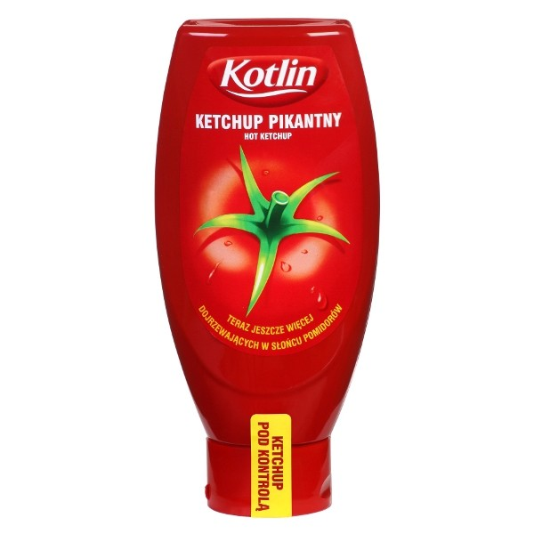
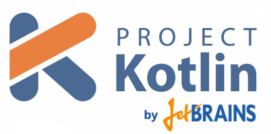
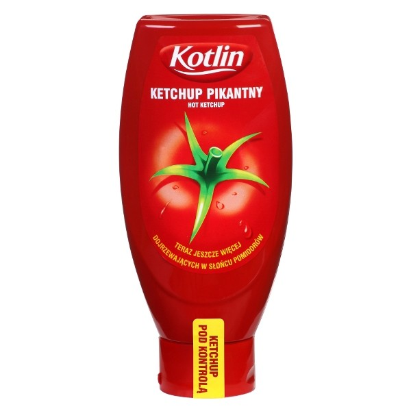
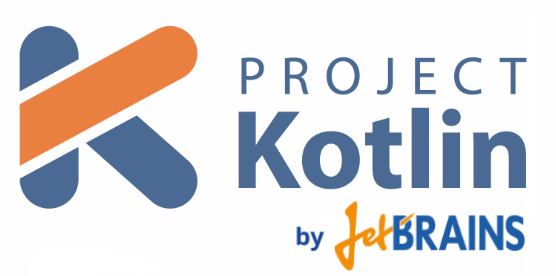

fun result(args: Array<String>) =
html {
head {
title {+"XML encoding with Kotlin"}
}
body {
h1 {+"XML encoding with Kotlin"}
p {+"this format can be used as an alternative markup to XML"}
// an element with attributes and text content
a(href = "http://kotlinlang.org") {+"Kotlin"}
// mixed content
p {
+"This is some"
b {+"mixed"}
+"text. For more see the"
a(href = "http://kotlinlang.org") {+"Kotlin"}
+"project"
}
// content generated by
p {
for (arg in args)
+arg
}
}
}
XML encoding with Kotlin
XML encoding with Kotlin
this format can be used as an alternative markup to XML
Kotlin
This is some
mixed
text. For more see the
Kotlin
project
some text
Kotlin
A powerful new language for the JVM

Erwin de Gier | Software Architect | Open Source
Today's goal
“To get you to start with Kotlin in your project this Monday!”
What is Kotlin?
 



Why Kotlin?
- Compact, concise syntax
- Powerful features like type inference, higher order functions, Null safety, named parameters, extension functions
- 100% Java compatible, 100% open source
- Java 6 (think your current project or Android)
public class Person {
private String firstName;
private String lastName;
private LocalDate birthDay;
public String getLastName() {
return lastName;
}
public void setLastName(String lastName) {
this.lastName = lastName;
}
public LocalDate getBirthDay() {
return birthDay;
}
public void setBirthDay(LocalDate birthDay) {
this.birthDay = birthDay;
}
public String getFirstName() {
return firstName;
}
public void setFirstName(String firstName) {
this.firstName = firstName;
}
@Override
public boolean equals(Object o) {
if (this == o) return true;
if (o == null || getClass() != o.getClass()) return false;
Person person = (Person) o;
if (firstName != null ? !firstName.equals(person.firstName) : person.firstName != null) return false;
if (lastName != null ? !lastName.equals(person.lastName) : person.lastName != null) return false;
return birthDay != null ? birthDay.equals(person.birthDay) : person.birthDay == null;
}
@Override
public int hashCode() {
int result = firstName != null ? firstName.hashCode() : 0;
result = 31 * result + (lastName != null ? lastName.hashCode() : 0);
result = 31 * result + (birthDay != null ? birthDay.hashCode() : 0);
return result;
}
@Override
public String toString() {
return "Person{" +
"firstName='" + firstName + '\'' +
", lastName='" + lastName + '\'' +
", birthDay=" + birthDay +
'}';
}
}
data class Person(var firstName : String, var lastName : String, var birthDay : LocalDate)
Basics
- Functions can exists on file level
- Classes do not have to be in their own file
fun main(args: Array<String>) {
println("Hello World")
}
fun main(args: Array<String>) : Unit {
val total = { x: Int, y: Int -> x + y} //lambda statement
println(total(1,2)); //calling a function by variable name
println("Hello, World")
val list = listOf(-2,-1,0,1,2)
list.filter { it > 0 }.forEach { println(it) } //functions on iterables
val sum = ::calculateTotal //function reference
println(sum(2,2)) //prints 4
}
fun calculateTotal(x: Int, y: Int) = x + y //Example of an inline function,
//where the curly braces, return type and return statement can be ommitted.
fun closure() {
val list = listOf(-2,-1,0,1,2)
var total = 0;
list.filter { it > 0 }.forEach {
total += it //mutable accessibility to the variables in the "closure"
}
println(total) //prints 3
}
fun types() {
val s = "ABC" //type inference
var i = 1
var i2: Int = 1 //explicit typing
if(i is Int){
println("i is of type Int") //type check
}
var text: String? = null //nullable types
println(text?.length)
}
fun createPerson = createPerson(lastName = "lastname", height = 1.82)
//named /optional parameters
fun createPerson(firstName: String = "", lastName: String = "", street: String = "", number: Int = 0, height: Double = 0.0) {
}
fun whenExample(x : Int){
val result = when(x) {
getValue(x) -> print("getValue")
0,1 -> print("0 or 1")
else -> print("else")
}
//when with smart casts
val y : Any = ""
when(y) {
is String -> print(y.length)
is Int -> print(y.minus(1))
else -> print("else")
}
}
//extension function
fun String.allUpperCase() : Boolean {
return this == this.toUpperCase()
}
Getting Started
- IntelliJ: congrats, your done!
- Eclipse: install the Kotlin plugin
- git clone https://github.com/erwindeg/kotlin-koans
Kotlin Koans 1 Introduction
“Let's write some code!”
testScript {
post("/user/", params("email" to "erwin@edegier.nl","firstname" to "Erwin","lastname" to "de Gier")){
expectedResult("OK")
}
get("/user/erwin"){
expectedResult(params("email" to "erwin@edegier.nl","firstname" to "Erwin","lastname" to "de Gier"))
}
}
fun testScript(init : TestScript.() -> Unit ) : TestScript {
val testScript = TestScript()
testScript.init();
return testScript;
}
class TestScript {
fun get(url: String, params: Map<String,String> = mapOf(), validate : RestCall.() -> Unit) : RestCall {
var call = RestCall(Method.GET,url,params)
call.performCall()
call.validate()
return call
}
...
}
Kotlin Koans 5 Builders
“Let's write some code!”
Kotlin and Java project
https://github.com/erwindeg/kotlin-example
|kotlin-java
|-pom.xml //Kotlin compiler, kotlin stdlib, kotlin test
|-src/main/java //Kotlin and Java classes
|-src/test/java //Kotlin and Java tests
What's next?
Continue with the Koans from II
Read the reference
https://kotlinlang.org/docs/kotlin-docs.pdf